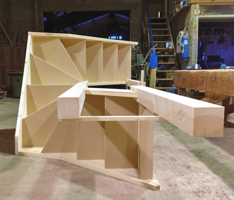
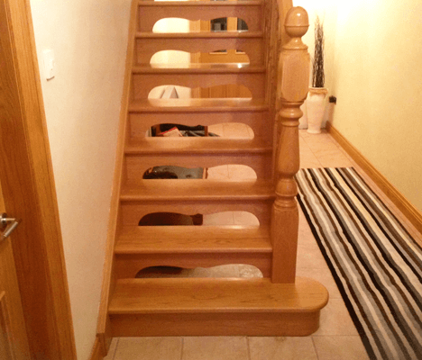
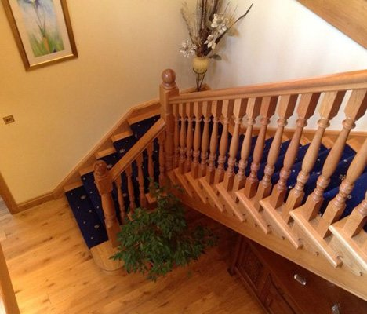
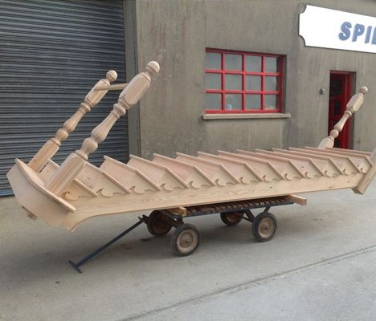
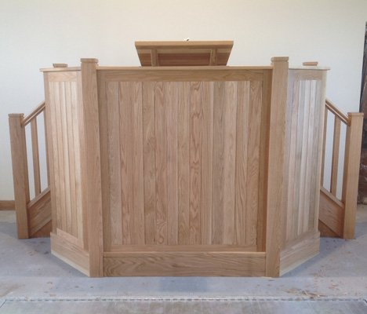
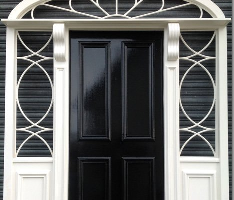
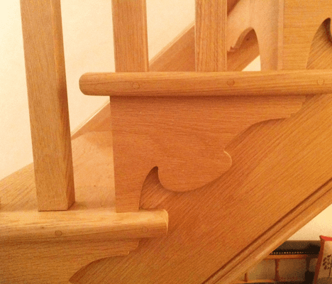
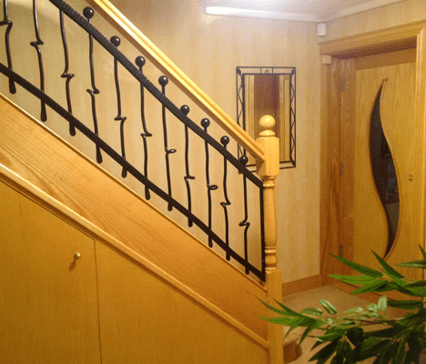

SELECTED WORK
The grain. The detail. The finish.
Explore the finished work, workshop details and applications.
12 examples

Staircases
Turned timber stair balusters ↗

Doors & Windows
Entrance door with a fanlight in the workshop ↗

Church Joinery
Timber church pulpit ↗

Doors & Windows
Finished timber entrance door and fanlight ↗

Workshop
Timber joinery being assembled in the workshop ↗

Staircases
Open timber staircase ↗

Staircases
Timber staircase and handrail ↗

Workshop
Staircase assembly outside the joinery workshop ↗

Church Joinery
Finished church pulpit with timber panelling ↗

Doors & Windows
Entrance door with glazed sidelights ↗

Staircases
Carved timber handrail detail ↗

Staircases